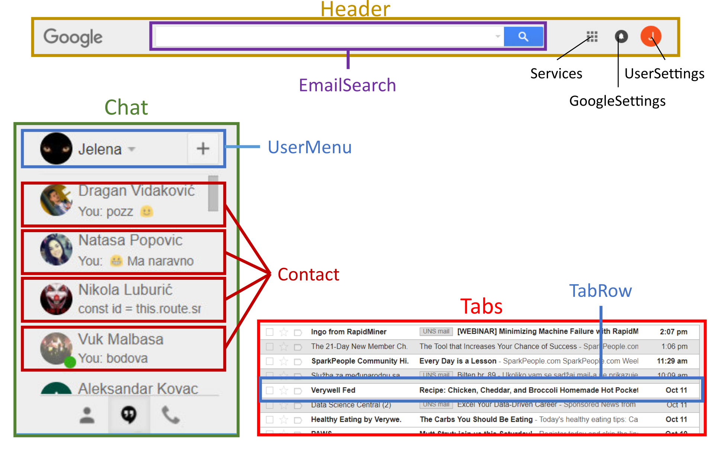

Angular
http://mbranko.github.io/webkurs
Ovo je deo web kursa
Literatura
- Nate Murray, Felipe Coury, Ari Lerner, Carlos Taborda.
ng-book: The Complete Book on Angular.
https://www.ng-book.com - Single Page Apps in Depth. http://singlepageappbook.com
- SPA and the Single Page Myth. https://johnpapa.net/pageinspa/
#1: SPA
Single page applications
- koncept: MVC arhitektura unutar web čitača
- sličan kao okruženja za desktop aplikacije
- Java Swing, .NET WPF, Qt...
- web čitač kao univerzalna platforma za korisnički interfejs
Šta je Angular
- framework za razvoj klijentskih web aplikacija
- nastao u Google, sada open source projekat
- verzije:
- verzija 1: AngularJS https://angularjs.org
- verzija 2 i više: Angular https://angular.io
- drastične izmene između v1 i v2
- kasnije izmene evolutivne
#2: Angular CLI
Angular CLI
- https://cli.angular.io
- alat za razvoj Angular aplikacija
- koristi se iz komandne linije
- olakšava:
- kreiranje projekta
- dodavanje novih fajlova
- testiranje u web čitaču
- izvršavanje razvojnih zadataka: testiranje, deployment...
sudo npm install -g @angular/cli
ng new hello-world
cd hello-world
ng serve
# --> http://localhost:4200
Angular CLI
- omogućava efikasan rad
- forsira stilske preporuke Angular tima:
- sintaksne konvencije, organizacija aplikacije (struktura foldera...)
- unifikovana i pregledna struktura aplikacije
- veoma važno kod kompleksnih aplikacija
- Angular Style Guide
Instalacija Angular CLI
- preduslov je instaliran Node.js
- instalacija Angular CLI:
sudo npm install -g @angular/cli
- možda je potreban restart komandne linije
- sve komande počinju sa
ng ng helpza početak
Kreiranje nove aplikacije
- pozicionirati se u folder gde će se kreirati nova aplikacija
ng new moja-aplikacija
- kreira se podfolder
moja-aplikacijasa fajlovima
Pokretanje nove aplikacije
- pozicionirati se u folder gde će je kreirana aplikacija
cd moja-aplikacija
ng serve
- aplikacija je dostupna na http://localhost:4200
- izmene u kodu će se automatski kompajlirati i prikazati u web čitaču
Editor za TypeScript
- Sublime Text 3 sa TypeScript paketom
- Visual Studio Code sa TypeScript paketom
- JetBrains WebStorm
#3: komponente
Pojam komponente
- Angular aplikacije se sastoje iz komponenti
- komponenta je odgovorna za deo korisničkog interfejsa - "deo ekrana"
- prikaz i funkcionalnost dela UI-ja za koji je zadužena
AppComponent- korenska komponenta koja sadrži sve ostale
Osnovni HTML fajl projekta
<!-- src/index.html -->
<!doctype html>
<html>
<head>
<meta charset="utf-8">
<title>HelloWorld</title>
<base href="/">
<meta name="viewport" content="width=device-width, initial-scale=1">
<link rel="icon" type="image/x-icon" href="favicon.ico">
</head>
<body>
<-- komponenta koja predstavlja našu aplikaciju -->
<app-root>Loading...</app-root>
</body>
</html>
Kreiranje komponente
$ ng generate component moja-komponenta
installing component
create src/app/moja-komponenta/moja-komponenta.component.css
create src/app/moja-komponenta/moja-komponenta.component.html
create src/app/moja-komponenta/moja-komponenta.component.spec.ts
create src/app/moja-komponenta/moja-komponenta.component.ts
$ ng generate component folder/komponenta
installing component
create src/app/folder/komponenta/komponenta.component.css
create src/app/folder/komponenta/komponenta.component.html
create src/app/folder/komponenta/komponenta.component.spec.ts
create src/app/folder/komponenta/komponenta.component.ts
Komponenta
- Komponenta je klasa sa
@Componentdekoratorom
// src/app/hello-world/hello-world.component.ts
import { Component, OnInit } from '@angular/core';
@Component({
selector: 'app-hello-world',
templateUrl: './hello-world.component.html',
styleUrls: ['./hello-world.component.css']
})
export class HelloWorldComponent implements OnInit {
constructor() { }
ngOnInit() {
}
}Komponenta
templateUrlilitemplate: prikaz komponente
<!-- src/app/hello-world/hello-world.component.html -->
<p>
hello-world works!
</p>
Korišćenje komponente
- HTML tag komponente dodamo u templejt druge komponente
<!-- src/app/app.component.html -->
<h1>
{{title}}
<app-hello-world></app-hello-world>
</h1>
Korišćenje komponente

Komponenta i podaci
ng generate component user-item
<!-- src/app/app.component.html -->
<h1>
{{title}}
<app-hello-world></app-hello-world>
<app-user-item></app-user-item>
</h1>
Komponenta i podaci
// src/app/user-item/user-item.component.ts
import { Component, OnInit } from '@angular/core';
@Component({
selector: 'app-user-item',
templateUrl: './user-item.component.html',
styleUrls: ['./user-item.component.css']
})
export class UserItemComponent implements OnInit {
name: string; // dodali smo atribut
constructor() {
this.name = 'Žika'; // i inicijalizovali ga
}
ngOnInit() {
}
}
Komponenta i podaci
<!-- src/app/user-item/user-item.component.html -->
<p>
Hello {{ name }}
</p>
Korišćenje komponente
Primer: YouTube
Primer: GMail
Primer: GMail
Primer: Twitter
Zadatak: podeliti na komponente

Primer: Wine Cellar
- kreiramo novu aplikaciju
$ ng new wine-cellar
$ cd wine-cellar
- komponente koje se pojavljuju u svakom prikazu ćemo staviti u folder
core
$ ng g component core/header
$ ng g component core/navbar
- komponente za manipulaciju vinima u folder
wine
$ ng g component wine/wine-list
$ ng g component wine/edit-wine
Primer: Wine Cellar
WineListComponentse deli naSearchFormComponentTableComponentPaginationComponent- treba kreirati ove komponente u folderu
wine
$ ng g component wine/search-form
$ ng g component wine/table
$ ng g component wine/pagination
Struktura projekta
node_modules folder

Struktura komponente
Struktura komponente
Zadatak
- prefiks
app-u selektoru promeniti uwc- - templejt za
AppComponentpreraditi tako da - prvim redom upravlja
HeaderComponent - drugim redom upravlja
NavbarComponent - trećim redom upravlja
WineListComponent
Zadatak
WineListComponentpreraditi tako da prikažeh1naslov sa tekstom "WineListComponent" a ostatak podeliti na tri reda:- templejt za
AppComponentpreraditi tako da - prvim redom upravlja
SearchFormComponent - drugim redom upravlja
TableComponent - trećim redom upravlja
PaginationComponent
Bootstrap
- koristićemo Bootstrap v4 kao CSS biblioteku
- iskopirati
bootstrap.cssibootstrap.css.mapusrc/assets/css - izmeniti
.angular-cli.jsontako dastylessadrži i Bootstrap-ov CSS:
"styles": [
"styles.css",
"assets/css/bootstrap.css"
]
- restartovati Angular CLI
Bootstrap grid sistem i Wine Cellar
Zadatak
- dodati Bootstrap u Wine Cellar
- dodati Bootstrap klase kojima ćemo definisati grid sistem u templejtu
AppComponent - u korenski
divdodati klasucontainer-fluid - svaka od sadržanih komponenti se prostire u 1 redu i svih 12 kolona
- dodati Bootstrap klase kojima ćemo definisati grid sistem u templejtu
WineListComponent - ne treba stavljati
container-fluid(već je u korenskoj komponenti) - svaka od sadržanih komponenti se prostire u 1 redu i svih 12 kolona
- zameniti templejte za header, navbar i table komponente - download
wine.jpgstaviti usrc/assets/images
Željeni izgled
#4: Moduli
Pojam modula
- svi delovi neophodni za funkcionisanje aplikacije se stavljaju u modul
- modul može da sadrži i druge module
- aplikacija se može oslanjati i na druge module
Pojam modula
- moduli su hijerarhijski organizovani
- na vrhu je root module
- tipično se korenski modul zove
AppModule
Wine Cellar: definicija AppModule
Trenutna struktura Wine Cellar aplikacije
#5: Interpolacija
Interpolacija: dinamičko izračunavanje izraza
- vrednost izraza se izračunava prilikom prikazivanja
Vrednost izraza 2+2: {{2+2}}
- atributi komponente
private title: string = "primer";
private a: number = 5;
private b: number = 3;
{{title}}
{{a}} + {{b}} = {{a+b}}
Naslov sadrži {{title.length}} znakova.
Interpolacija
- ternarni operator
{{ a > 0 ? 'positive' : 'negative' }}
- poziv metode komponente
subtract(x: number, y: number): number {
return x - y;
}
{{a}} - {{b}} = {{subtract(a, b)}}
#6: Kolekcije podataka
Kolekcije podataka
ng new hello-world
cd hello world
ng g component user-list
<!-- src/app/app.component.html -->
<h1>
{{title}}
<app-hello-world></app-hello-world>
<app-user-list></app-user-list>
</h1>
Kolekcije podataka
// src/app/user-list/user-list.component.ts
import { Component, OnInit } from '@angular/core';
@Component({
selector: 'app-user-list',
templateUrl: './user-list.component.html',
styleUrls: ['./user-list.component.css']
})
export class UserListComponent implements OnInit {
names: string[];
constructor() {
this.names = ['Žika', 'Pera', 'Mika', 'Laza'];
}
ngOnInit() {
}
}
Kolekcije podataka
<!-- src/app/user-item/user-list.component.html -->
<ul>
<li *ngFor="let name of names">Hello {{ name }}</li>
</ul>
Kolekcije podataka

Jedna komponenta poziva drugu
ng g component user-item
<!-- src/app/user-list/user-list.component.html -->
<ul>
<li *ngFor="let name of names">
<app-user-item></app-user-item>
</li>
</ul>
Jedna komponenta poziva drugu
ups...

Prenos podataka u komponentu
// src/app/user-item/user-item.component.ts
import { Component, OnInit, Input } from '@angular/core';
@Component({
selector: 'app-user-item',
templateUrl: './user-item.component.html',
styleUrls: ['./user-item.component.css']
})
export class UserItemComponent implements OnInit {
@Input() name: string; // dodali smo dekorator
constructor() {
this.name = 'Žika';
}
ngOnInit() {
}
}
Prenos podataka u komponentu
<!-- src/app/user-list/user-list.component.html -->
<ul>
<li *ngFor="let name of names">
<app-user-item [name]="name"></app-user-item>
</li>
</ul>
Konfiguracija modula
// src/app/app.module.ts
@NgModule({
declarations: [
AppComponent,
HelloWorldComponent, // moramo deklarisati
UserItemComponent, // komponente pre upotrebe
UserListComponent
], imports: [
BrowserModule,
FormsModule,
HttpModule
],
providers: [], // injektovane stvari
bootstrap: [AppComponent] // glavna komponenta
})
export class AppModule { }
#7: obrada događaja
Primer: reddit klon
ng new angular-reddit
Iskopirajte fajlove iz reddit-files.zip u src folder.
Proba

app.component.html
<form class="ui large form segment">
<h3 class="ui header">Dodaj link</h3>
<div class="field">
<label for="title">Naslov:</label>
<input name="title"/>
</div>
<div class="field">
<label for="link">Link:</label>
<input name="link"/>
</div>
</form>
app.component.html
app.component.ts
export class AppComponent {
title = 'app works!';
addArticle(title: HTMLInputElement, link: HTMLInputElement): boolean {
console.log(`Dodajemo članak sa naslovom: ${title.value} i linkom: ${link.value}`);
return false;
}
}
app.component.html
<form class="ui large form segment">
<h3 class="ui header">Dodaj Link</h3>
<div class="field">
<label for="title">Naslov:</label>
<input name="title" #newtitle /> <!-- dodeli tag lokalnoj promenljivoj -->
</div>
<div class="field">
<label for="link">Link:</label>
<input name="link" #newlink /> <!-- dodeli tag lokalnoj promenljivoj -->
</div>
<!-- dodato dugme, koristimo promenljive! -->
<button (click)="addArticle(newtitle, newlink)"
class="ui positive right floated button">
Pošalji link
</button>
</form>
Resolve
<input name="title" #newtitle>
#newtitlesintaksa zove se resolve- promenljiva
newtitleće biti dostupna u templejtu - njen tip je
HTMLInputElementjer predstavlja čvor u DOM stablu
Akcije i događaji
<button (click)="addArticle(newtitle, newlink)">
addArticleje funkcija u komponentinewtitleje definisana kao resolvenewlinkje definisana kao resolve
Reakcija na događaj
Komponenta za članak
ng generate component article
- definišemo izgled
ArticleComponentu templejtu - definišemo osobine
ArticleComponentu klasi newlinkje definisana kao resolve
article.component.html
<div class="four wide column center aligned votes">
<div class="ui statistic">
<div class="value">{{ votes }}</div>
<div class="label">Points</div>
</div>
</div>
<div class="twelve wide column">
<a class="ui large header" href="{{ link }}">{{ title }} </a>
<ul class="ui big horizontal list voters">
<li class="item">
<a href (click)="voteUp()">
<i class="arrow up icon"></i> upvote
</a>
</li>
<li class="item">
<a href (click)="voteDown()">
<i class="arrow down icon"></i> downvote
</a>
</li>
</ul>
</div>
article.component.ts
export class ArticleComponent implements OnInit {
// dodajemo atribut na host element, tj. element koji
// predstavlja ovu komponentu u templejtima
@HostBinding('attr.class') cssClass = 'row';
votes: number; // suma glasova
title: string; // naslov clanka
link: string; // link na clanak
constructor() {
this.title = 'Angular 2';
this.link = 'http://angular.io';
this.votes = 10;
}
voteUp() {
this.votes += 1;
}
voteDown() {
this.votes -= 1;
}
ngOnInit() { }
}app.component.html
Ispod form elementa treba dodati:
<div class="ui grid posts">
<app-article>
</app-article>
</div>
app.module.ts
Angular CLI je dodao novu komponentu u deklaracije prilikom poziva ng generate component. Bez toga tag app-article ne bi bio prepoznat.
@NgModule({
declarations: [
AppComponent,
ArticleComponent
],
imports: [
BrowserModule,
FormsModule,
HttpModule
],
providers: [],
bootstrap: [AppComponent]
})
export class AppModule { }
Novo stanje

Klik na linkove "glas više" / "glas manje" izaziva page reload.
Obrada događaja
- JavaScript će propagirati
clickdogađaj svim roditeljskim komponentama - klik na "prazan" link će izazvati reload
- treba vratiti
falseda bismo sprečili propagiranje događaja prema roditeljima
voteUp() {
this.votes += 1;
return false;
}
voteDown() {
this.votes -= 1;
return false;
}
#8: model podataka
Model klasa
- podatke o članku predstavićemo novom klasom
Article - to je obična TypeScript klasa, nije komponenta
ng generate class article/Article
article.ts
export class Article {
title: string;
link: string;
votes: number;
constructor(title: string, link: string, votes?: number) {
this.title = title;
this.link = link;
this.votes = votes || 0;
}
voteUp() {
this.votes += 1;
}
voteDown() {
this.votes -= 1;
}
}
article.component.ts
import { Article } from './article';
export class ArticleComponent implements OnInit {
@HostBinding('attr.class') cssClass = 'row';
article: Article;
constructor() {
this.article = new Article(
'Angular 2',
'http://angular.io',
10);
}
voteUp() {
this.article.voteUp();
return false;
}
voteDown() {
this.article.voteDown();
return false;
}
...
}article.component.html
<div class="four wide column center aligned votes">
<div class="ui statistic">
<div class="value">{{ article.votes }}</div>
<div class="label">Poena</div>
</div>
</div>
<div class="twelve wide column">
<a class="ui large header" href="{{ article.link }}">{{ article.title }} </a>
<ul class="ui big horizontal list voters">
<li class="item">
<a href (click)="voteUp()">
<i class="arrow up icon"></i> glas više
</a>
</li>
<li class="item">
<a href (click)="voteDown()">
<i class="arrow down icon"></i> glas manje
</a>
</li>
</ul>
</div>
Novo stanje

Rukovanje kolekcijom članaka
- niz članaka (
Article[]) možemo čuvati uAppComponent - izmenićemo
ArticleComponenttako da primaArticlekao ulazni parametar - izmenićemo templejt za
AppComponenttako da prima više puta prikažeArticleComponent
app.component.ts
import { Component } from '@angular/core';
import { Article } from './article/article';
@Component({
selector: 'app-root',
templateUrl: './app.component.html',
styleUrls: ['./app.component.css']
})
export class AppComponent {
articles: Article[];
constructor() {
this.articles = [
new Article('Angular 2', 'http://angular.io', 3),
new Article('Fullstack', 'http://fullstack.io', 2),
new Article('TypeScript', 'http://typescriptlang.org', 1),
];
}
}article.component.ts
import { Component, OnInit, HostBinding, Input } from '@angular/core';
import { Article } from './article';
@Component({
selector: 'app-article',
templateUrl: './article.component.html',
styleUrls: ['./article.component.css']
})
export class ArticleComponent implements OnInit {
@HostBinding('attr.class') cssClass = 'row';
@Input() article: Article; // dodali smo dekorator
constructor() {
// article se popunjava @Input() injekcijom
}
...
}app.component.html
<div class="ui grid posts">
<app-article *ngFor="let article of articles" [article]="article">
</app-article>
</div>
Novo stanje

Dodavanje novog članka: app.component.ts
addArticle(title: HTMLInputElement, link: HTMLInputElement): boolean {
console.log(`Dodajem članak: ${title.value} i link: ${link.value}`);
this.articles.push(new Article(title.value, link.value, 0));
title.value = '';
link.value = '';
return false;
}
Prikaz domena iz linka: article.ts
domain(): string {
try {
// 1. skini http://
const domainAndPath: string = this.link.split('//')[1];
// 2. skini sve iza prve /
return domainAndPath.split('/')[0];
} catch (err) {
return null;
}
}
Prikaz domena iz linka: article.component.html
<a class="ui large header" href="{{ article.link }}">{{ article.title }}</a>
<!-- dodato vvv-->
<div class="meta">({{ article.domain() }})</div>
<!-- dodato ^^^-->
<ul class="ui big horizontal list voters">
...
</ul>
Novo stanje
Prikaz sortiranih podataka
- za sortiranje će poslužiti ugrađena funkcija
sortza nizove - kriterijum sortiranja: razlika glasova
export class AppComponent {
...
sortedArticles(): Article[] {
return this.articles.sort((a: Article, b: Article) => b.votes - a.votes);
}
}
Prikaz sortiranih podataka: app.component.html
<div class="ui grid posts">
<app-article *ngFor="let article of sortedArticles()" [article]="article">
</app-article>
</div>
#9: ulazi i izlazi komponente
Primeri u repozitorijumu
[ulaz] i (izlaz)
- za prenos ulaza u komponentu koriste se
[uglaste]zagrade - za prenos izlaza u komponentu koriste se
(obične)zagrade
app.component.html
<div class="inventory-app">
<products-list
[productList]="products"
(onProductSelected)="productWasSelected($event)">
</products-list>
</div>
products-list.component.ts
export class ProductsListComponent {
@Input() productList: Product[]; // ulaz
@Output() onProductSelected: EventEmitter<Product>; // izlaz
clicked(product: Product): void {
this.currentProduct = product;
this.onProductSelected.emit(product); // emitujemo na izlaz
}
isSelected(product: Product): boolean {
if (!product || !this.currentProduct) {
return false;
}
return product.sku === this.currentProduct.sku;
}
...
}
EventEmitter je observer pattern
- održava listu "pretplatnika" na događaj
- publikuje događaj
let ee = new EventEmitter();
ee.subscribe((name:string) => console.log(`Hello ${name}`));
ee.emit("Žika");
// -> "Hello Žika"
- kada vežemo
EventEmitterza izlaz, Angular će ga automatski pretplatiti
products-list.component.html
<div class="ui items">
<product-row
<!-- iteracija kroz niz -->
*ngFor="let myProduct of productList"
<!-- prenos ulaznog parametra -->
[product]="myProduct"
<!-- pretplata na događaj (klik mišem) -->
(click)='clicked(myProduct)'
<!-- uključi/isključi CSS klasu selected zavisno od uslova -->
[class.selected]="isSelected(myProduct)">
</product-row>
</div>
#10: ugrađene direktive
ngIf
<div *ngIf="false"></div>
<div *ngIf="a > b"></div>
<div *ngIf="str == 'yes'"></div>
<div *ngIf="myFunc()"></div>
ngSwitch
<div class="container" [ngSwitch]="myVar">
<div *ngSwitchCase="'A'">Var is A</div>
<div *ngSwitchCase="'B'">Var is B</div>
<div *ngSwitchCase="'C'">Var is C</div>
<div *ngSwitchDefault>Var is something else</div>
</div>
ngStyle
<div [style.background-color]="'yellow'"> ...
</div>
<div [ngStyle]="{color: 'white', 'background-color': 'blue'}"> ...
</div>
ngClass
.bordered {
border: 1px dashed black; background-color: #eee;
}
<div [ngClass]="{bordered: false}">This is never bordered</div>
<div [ngClass]="{bordered: true}">This is always bordered</div>
Model
- model u prikazu je TypeScript klasa
// src/app/models/institution.ts
export class Institution {
constructor(
public id: number,
public title: string) { }
}
Servis
- servis je klasa koja obavlja neki posao za komponentu
- tipično se dobavlja injekcijom
ng generate service services/Institution
Servis
// src/app/services/institution.service.ts
import { Injectable } from '@angular/core';
import { Http } from '@angular/http';
import { Institution } from "../model/institution";
@Injectable()
export class InstitutionService {
constructor(private http: Http) {
}
getInstitutions(): Promise<Institution[]> {
return this.http.get('/institutions')
.toPromise()
.then(response => response.json()._embedded.institutions as Institution[])
.catch(this.handleError);
}
}Injekcija servisa
- referencu na servis komponenta će dobiti injekcijom
@Component({
...
providers: [InstitutionService],
})
export class InstitutionsListComponent implements OnInit {
constructor(private institutionService: InstitutionService) { }
...
}
#11: rutiranje
Pojam rutiranja
- rutiranje omogućava
- navigacij između različitih prikaza
- back i forward u web čitaču
- razmenu parametara između komponenti koje se prikazuju
- primer:
Rutiranje i SPA
- single page apps: stalno smo na istoj stranici
- menjamo elemente korisničkog interfejsa
- na primer, u Wine Cellar aplikaciji
- uvek stoje
HeaderComponentiNavbarComponent - ispod njih se smenjuju
WineListComponentiEditWineComponent
Mesto gde se smenjuju komponente
Rutiranje i URL
- kako znamo u kom delu aplikacije se nalazi korisnik, tj. šta treba da mu se prikaže?
- URL je jedinstven - na osnovu njega možemo odrediti šta se prikazuje
- primer:
- http://localhost:4200/wines - prikazuje tabelu sa vinima, odnosno
WineListComponent - http://localhost:4200/wines/add - prikazuje formu za dodavanje vina, odnosno
EditWineComponent
Tradicionalne aplikacije vs SPA
- u tradicionalnim aplikacijama:
- promena URL-a automatski izaziva refresh stranice
- web čitač šalje zahtev za novom stranicom
- u SPA:
- ne moramo osvežiti celu stranicu
- menjamo samo delove stranice tako što menjamo DOM stablo (pomoću Angulara)
- menjamo URL u web čitaču bez osvežavanja stranice
HTML5 History API
- Angular se oslanja na HTML5 History API
- URL sajta se može menjati bez osvežavanja stranice
- isto važi i za back i forward
- moramo u
index.htmldodati<base href="/"> - URL se formira tako što se nešto doda na koren
- neće izazvati refresh stranice
- sve iza korena tretira se kao pravilo navigacije koje će Angular koristiti
Definisanje pravila rutiranja
- http://localhost:4200 - koren naše aplikacije
- http://localhost:4200/wines -
WineListComponent - http://localhost:4200/wines/add -
EditWineComponent - na osovu ovoga definišemo pravila rutiranja:
const routes: Routes = [
{path: 'wines', component: WineListComponent},
{path: 'wines/add', component: EditWineComponent}
]
Angularov Router modul
- moramo uključiti
RouterModule - u njemu je definisana direktiva
<router-outlet> - u njemu je definisana klasa
Routes
Uključivanje RouterModule u projekat
- u definiciji modula naše aplikacije -
app.module.ts:
Izazivanje prelaska između stranica
- u templejtu - klik na link koji ima atribut
routerLink
- u klasi komponente - injekcijom dobijamo router servis
import { Router } from '@angular/router';
@Component({
selector: 'app-edit-wine',
templateUrl: './edit-wine.component.html',
styleUrls: ['./edit-wine.component.css']
})
export class EditWineComponent implements OnInit {
constructor(private router: Router) { ... }
}
...
this.router.navigate(['wines/'])
Primer rutiranja
- primer u projektu winecellar-routing.zip
Izdvajanje rutiranja u poseban modul
- u praksi se pravi poseban modul čiji zadatak je rutiranje u aplikaciji
- nazvaćemo ga
AppRoutingModule
Pravljenje AppRoutingModule
- kreirati novi modul u
app-routing.module.ts$ ng g module app-routing - u
AppRoutingModuleimportovatiRouterModule RouterModule dodati u exportsAppRoutingModule-a
import { RouterModule } from '@angular/router'; // ovde
@NgModule({
imports: [
CommonModule,
RouterModule // ovde
],
exports: [
RouterModule // ovde
],
declarations: []
})
export class AppRoutingModule { }
Definisanje rutiranja - koraci
- radi bolje organizacije koda, pravila rutiranja ćemo staviti u poseban fajl
src/app/app-routing/routes.ts
Definisanje rutiranja - koraci
- proslediti definisanje putanje u
RouterModule - u
AppRoutingModule - importovati
routeskonstantu - proslediti je
RouterModule-u kao parametarforRootfunkcije
import { RouterModule } from '@angular/router';
import { routes } from './routes'; // ovde
@NgModule({
imports: [
CommonModule,
RouterModule.forRoot(routes) // ovde
],
exports: [
RouterModule
],
declarations: []
})
export class AppRoutingModule { }
Primer rutiranja
- primer u projektu winecellar-routing2.zip
#11: forme
Podsetnik: forme u HTML-u
- forme su predstavljene elementom
<form>...</form> - unutar njega možemo smestiti elemente
<input><textarea><button><select>- ...
Primer forme za unos
Template-driven forms
- vezujemo TypeScript objekte za elemente forme pomoću two-way data binding
<element [(ngModel)]="objekat"/> - element mora imati atribut
name - sve promene nad elementom rezultuju izmenom TypeScript objekta
- i obrnuto: sve izmene nad objektom vide se u elementu forme
FormsModule
- radi korišćenja
ngModeldirektive mora se importovatiFormsModule - u naš
AppModuledodamo:
import { FormsModule } from '@angular/forms';
...
@NgModule({
declarations: [
AppComponent,
RegisterUserComponent
],
imports: [
BrowserModule,
FormsModule, // ovde
],
providers: [],
bootstrap: [AppComponent]
})
export class AppModule { }
Primer forme
Primer forme
Primer forme
- u
formelement dodati direktivungSubmit - funkcija koja se poziva mora biti definisana u komponenti kojoj pripada taj templejt
Validacija forme
- na klijentskoj strani možemo proveriti korisnički unos
- obavezna polja, ispravan format, ...
- isključiti submit dugme dok svi unosi nisu validni
- ispisati upozorenje za unose koji nisu validni
- koristimo iste atribute kao i za HTML5 validaciju
- required, min, max, ...
- https://developer.mozilla.org/en-US/docs/Web/Guide/HTML/HTML5/Constraint_validation
- treba dodati atribut
novalidateda bi se isključila HTML5 validacija - da ne ulazi u koliziju sa Angularom!
<form novalidate>
Validacija forme - direktiva ngModel
- stanje elementa forme možemo proveriti tako što eksportujemo ngModel u lokalnu promenljivu u templejtu
<input #varijabla="ngModel"> - putem ove promenljive možemo pratiti stanje elementa
- na primer, sledeća polja definisana na ovakvoj promenljivoj su nam interesantna:
touched- ako je element imao fokusvalid- ako je sadržaj validanerrors- null ako nema grešaka, inače objekat koji opisuje greške- kompletna lista polja: https://angular.io/api/forms/AbstractControl
Primer forme - dodavanje ograničenja
- username je obavezan
- email je obavezan
- provera formata emaila (username@domen)
- password je obavezan
- password mora imati najmanje 8 znakova
Primer forme - dodavanje ograničenja
Primer forme - dodavanje ograničenja

Primer forme - dodavanje ograničenja
Validacija cele forme - ngForm
- u
formelementu eksportujemongFormdirektivu u lokalnu promenljivu<form #varijabla="ngForm"> - putem ove promenljive možemo pratiti stanje cele forme
- sadrži
pristine,errors... - polja koja se odnose na celu formu - sadrži sve elemente forme kojima smo dodali
ngModeliname - elemente forme referenciramo po imenu (
name) - možemo pojedinačno proveravati stanje elemenata
Validacija cele forme - ngForm
Primer forme
- primer u projektu winecellar-form1.zip
Prednosti template-driven formi
- veoma jednostavne za implementaciju
- primenljive na širok spektar problema
Nedostaci template-driven formi
- validacija i povezivanje sa modelom podataka vrši se u templejtu
- validacija u templejtu postaje nečitka u složenim slučajevima
- neprikladne za automatizovano testiranje
- teško je održavati konzistentnost podataka - da li polja sadrže validne vrednosti
- => reactive forms
Primer reactive forme
ReactiveFormsModule
- moramo importovati
FormsModuleiReactiveFormsModule - u naš
AppModuledodamo:
import { FormsModule, ReactiveFormsModule } from '@angular/forms'; // ovde
...
@NgModule({
declarations: [
AppComponent,
RegisterUserComponent
],
imports: [
BrowserModule,
FormsModule, // ovde
ReactiveFormsModule // ovde
],
providers: [],
bootstrap: [AppComponent]
})
export class AppModule { }
FormGroup
- u klasu komponente
RegisterUserComponentdodajemo poljeregisterUserFormkoje predstavlja model forme
import { FormsGroup, FormBuilder } from '@angular/forms'; // ovde
...
@Component({
selector: 'app-register-user',
templateUrl: './register-user.component.html',
styleUrls: ['./register-user.component.css']
})
export class RegisterUserComponent implements OnInit {
registerUserForm: FormGroup; // ovde
...
}
FormBuilder
- model forme gradi se pomoću
FormBuilder

Templejt forme
- vezujemo
<form>element za model forme - vezujemo elemente forme za odgovarajuće kontrole u okviru modela forme
Primer forme
- sada možemo menjati vrednosti inputa i posmatrati kako se menja model forme (
registerUserForm.value) - vezujemo elemente forme za odgovarajuće kontrole u okviru modela forme

Submit: slanje popunjene forme
Primer forme
Složenije forme
- u jednostavnim slučajevima (npr. register user, search box) dovoljan je model forme
- za unos složenijih objekata korisno je razdvojiti:
- model forme: kontrole u formi, validacija...
- model podataka: konzistentnost podataka u objektu: obavezna polja, odgovarajući tip, ograničenja...
Primer: ažuriranje zaposlenog
- model zaposlenog: klasa
Employee - sadrži polja:
_id,name,surname,jmbg,email

Primer: ažuriranje zaposlenog
- u klasu komponente
EditEmployeeComponentdodajemo dva atributa employee- model podatakaemployeeForm- model forme
Primer: ažuriranje zaposlenog
- submit forme
Popunjavanje forme prema modelu
- želimo da popunimo formu prema modelu podataka
- početno stanje forme treba da predstavlja objekat koji želimo da menjamo
- dve metode:
setValue- dodeli vrednosti svim kontrolama forme odjednompatchValue- ažuriraj podskup kontrola forme
Popunjavanje forme prema modelu
Revert forme
- recimo da je korisnik menjao podatke u formi pa hoće da ih vrati u početno stanje
- model podataka je odvojen od forme pa je ovo jednostavno:
Reaktivni stil
- eksplicitno se vodi računa o toku podataka
Reaktivni stil
- klasa komponente
- kreira i manipuliše kontrolama forme
- neposredno pristupa modelu podataka i strukturi forme
- kontroliše tok podataka
- kontrola toka ne ažurira model direktno
- izvlači promene koje je korisnik napravio
- prosleđuje ih spoljnim komponentama ili servisima i vraća novi model podataka
- komponenta reflektuje promene na formi
Primer forme
- dodajemo ograničenja
- sve kontrole moraju biti popunjene
- JMBG mora imati 13 karaktera
- email mora biti u formatu ime@domen
Validacija forme
- dodajemo je u komponenti a ne u templejtu
- importovati
Validatorsiz@angular/forms - validatore zakačiti za kontrolu pomoću
FormBuildera - Angular će pozivati ove funkcije kad se promeni vrednost u kontroli
- ugrađeni validatori: https://angular.io/api/forms/Validators

Provera stanja kontrola u formi
- ispitivanje stanja kontrole na formi:
forma.controls.ime_kontrole.errors?.ime_greske - za svaku kontrolu i celu formu dostupna su polja:
| polje | opis |
value |
vrednost unesena u kontrolu |
valid |
true ako je kontrola validna |
status |
VALID, INVALID, PENDING, DISABLED |
pristine dirty |
pristine je true ako korisnik nije menjao vrednost kontrole, dirty obrnuto |
touched untouched |
untouched je true ako korisnik nije nijednom fokusirao kontrolu, touched obrnuto |
Primer provere stanja
Primer reactive forme
Prednosti i nedostaci reactive formi
- prednost: većina logike je u TypeScript kodu
- možemo praviti custom validatore
- jednostavnije za automatsko testiranje
- mana: nešto složenije od template-driven formi
- gotovo sve se može postići pomoću obe vrste formi, ali
- dosta funkcionalnosti se lakše implementira pomoću reactive formi
- kompleksnija validacija je lakša pomoću reactive formi
Dodatni materijali
- template-driven forms: https://angular.io/guide/forms
- reactive forms: https://angular.io/guide/reactive-forms
- validacija forme: https://angular.io/guide/form-validation
- https://blog.angular-university.io/introduction-to-angular-2-forms-template-driven-vs-model-driven/